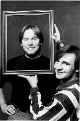
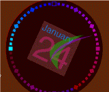
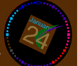
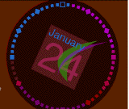
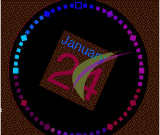
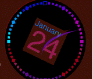
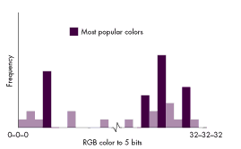
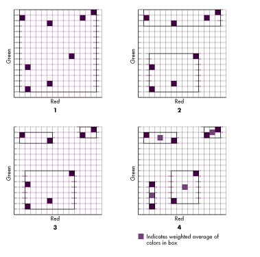
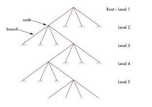
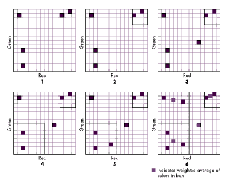

When you want to display an image that contains more color information than the
display device is capable of rendering, how do you pick the best colors to use? The
Picture Utilities Package, new in System 7, provides two methods, which we describe
here. You also have the option of developing your own color selection algorithm. This
article and the accompanying code on the Developer CD Series disc will get you started.
It's tricky to display an image when the number of colors used in the source exceeds
the number of colors available on the device. On an indexed device (256 or fewer
colors), an application can choose, via the Palette Manager, which colors to use. But
how will it know which colors are the best ones to choose, given a particular image?
To avoid this issue altogether, your application can simply draw the image and let
QuickDraw use its default color palettes to make the choice. Because these palettes
contain a well-dispersed set of colors, most images look pretty good. However, in the
case of an image that uses an unbalanced set of colors, such as an underwater scene
with many subtle shades of blue, relying on the default palette will not produce a
good-looking result. In this case, youmust tackle the issue of how to choose the
optimal palette. That's when the new Picture Utilities Package can help.
Picture Utilities provides two methods--the popular method and the median
method--for determining the best colors. This article describes these two methods. In
addition, it describes a third method--the octree method--which, in addition to being
useful in itself, makes a convenient starting point for you to develop your own
algorithm for choosing the optimal color palette.
It would be nice if one method of selecting colors worked best for all types of images.
But the truth is that the methods provided in Picture Utilities work best for some
types of images (such as those whose colors are all clustered in one small portion of
the RGB cube), while QuickDraw's standard method works best for other types.
Therefore, it's always important to give the user a choice of which Picture Utilities
color-picking method to use and whether to use one of these at all.
The three methods we discuss here differ in how they approximate the ideal color set.
The popular method bases its choices on a frequency count of colors used in the image,
returning the most frequently used colors. Both the median and octree methods are
algorithms that describe occupancy in a space. In this case, the space is the color cube
with axes of red, green, and blue, and the occupants are the colors in the image. These
algorithms differ in the way they divide up the space in order to return the correct
number of colors. The median algorithm starts with one giant box covering the entire
cube and splits it into successively smaller boxes; the octree algorithm starts with
lots of tiny boxes and joins them into larger ones. Both methods return the weighted
average of each of the boxes as the final set of colors.
The most appropriate method for your particular use depends on factors such as the
type of image you want to display (real world, computer-generated, graphic, and so
on), image content (perhaps the colors of items in the foreground are more important
than the colors of items in the background), or even how the image will be displayed
(halftoned or dithered, for example). For instance, none of these methods take
dithering into account, although since we provide you with the source code, you could
modify the octree method to do so.
The speed of each method also varies, with the popular method being fastest, the
median method slower, and the octree method slowest, since in the latter there are
more calculations involved for each color chosen. Also, the code that we supply for the
octree method is intended to be easy to understand rather than blazingly fast. In fact,
the current code is slower than the popular method by a factor of four, but with a little
work this could probably be improved to be only twice as slow.
Another basic consideration is whether you want to represent the majority of colors in
the image or the range of colors present. For example, if you could select only two
colors to represent an image that contains several different shades of red and one blue
dot, you would have to decide whether to pick two reds in an attempt to represent the
majority of colors in the image, or one red and one blue to represent the range of
colors the image contains. The popular method would do the former, while the median
method would do the latter.
In general, the best method to use for an image that has a fairly well dispersed set of
colors is QuickDraw's default palette. The popular method is useful when the source
image contains only a few more colors than are available on the display device. For
example, if you want to display a 32-bit image that uses only 200 distinct colors on
an 8-bit device, the popular method is the best choice for speed and accuracy. While
this case is trivial, using the popular method does guarantee that the needed colors will
be made available, a claim that can't be made for the default palette. The median and
octree methods generally give the best results for images where small patches of a
distinctly different color must be preserved at the cost of blending together large
patches of similar colors.
Experience will give you a better feel for the strengths and weaknesses of each of these
methods. Meanwhile, for purposes of comparison, Figure 1 shows screen snapshots of
a 32-bit image as it originally appeared, using QuickDraw's default 16-color palette,
using 16 popular colors, using 16 median colors, and using 16 octree colors. The
original image has 77 different colors (to a resolution of five bits per color
component). A test program on theDeveloper CD Series disc enables you to experiment
with this image (or others) and to take a look at the code used to generate the various
versions.
Notice in the original image that the colors marking the minutes follow a smooth
progression from cyan on the far left to dark blue at the top to magenta on the right to
purple on the bottom and then to dark red just before the cyan. Also notice the subtle
color blending where the translucent minute and second hands intersect the underlying
clock. When the standard 16-color palette is used, the soft colors of the minute
markers change into much brighter, harder colors, and the smooth transitions are
replaced by sudden transitions. The colors of the background and the face of the clock
have changed. Furthermore, the subtle difference in color between the background and
the background of the date (January 24) is lost.
The popular method preserves the colors of the largest color areas: the background,
the clock face, the background of the date, the color of the minute and hour hands, and
the lettering. The colors of the minute markers remain soft, but lose their shading
resolution; for example, the cyan is replaced by a darker blue. Because it preserves
the range of colors, the median method performs somewhat better on the minute
markers than the previous two methods, but the clock face turns to black and the green
hand becomes washed out. Although the image's appearance may not be ideal because
many of the large areas are wrong, areas of the image that depend on the color ranges
(which in this image just happen to occupy small areas) are reproduced more
accurately. When the octree method is used, the result is similar to that of the median
method, except the green hour hand is completely lost. This is due to the simple tree
reduction algorithm we use; if the tree reduction improvements that we suggest at the
end of the article were implemented, the hour hand most likely would be preserved,
although its shade of green might change (much as happened with the median method).
The octree performed better than the median in preserving the color of the text and the
background of the date.
One conclusion from these images is that there is not a single best color-picking
algorithm, even for a particular picture. For this image, we would be inclined to use
the popular method, since we don't care too much about the subtle shading effects on
the minute markers. However, an artist might be much more concerned with the
subtle shading effects and actually not care if the face of the clock went to a completely
different but still solid shade. In this case, the artist would probably pick the median
or octree method. This is why applications that provide color optimization should allow
the user to choose between the various available methods.

Original


Default 16-color palette 16 popular colors


16 median colors 16 octree colors
Figure 1 An Image Displayed Using Four Different Color-Picking Methods
There is also a "system" method built into the Picture Utilities Package that tries to
select the best general method available. Currently, the popular method is selected if
the number of requested colors is 75% or greater of the total number of distinct
colors in the image (to a resolution of five bits per color component); otherwise the
median method is selected. The operation of this system method is almost certain to
change in the future.
Now that you have some idea of how the available color-picking methods compare, we
turn to details of how the popular, median, and octree methods work.
The popular method of color selection is the easiest to understand and in general
produces the least satisfactory results. This method chooses colors based on how
frequently they're used in the image. The operation is performed by creating a
histogram (a frequency count of each color) and then returning the colors that occur
most often (as shown in Figure 2), up to the specified number of colors. If the image
contains more than 256 different colors or if any of the source items are 32-bit
pixMaps, Picture Utilities only maintains color information to a resolution of five bits
per color component. Thus, colors must differ in the highest five bits of any of the
three color components (red, green, and blue) to be considered distinct.

Figure 2 Picking Four Colors Using the Popular Method
In Figure 2, the x-axis represents each possible RGB color to a resolution of five bits
per component. These colors range from 0-0-0 (0 red, 0 green, 0 blue) to
32-32-32 (32 red, 32 green, 32 blue) in the high five bits of the red-green-blue
color components, for a total of 215 or around 32,000 entries. The y-axis measures
the frequency of each of the colors, up to a maximum of 32,767 occurrences. Thus,
this table contains 215 entries of one word each and occupies 64K of memory.
For custom methods, Picture Utilities can generate this histogram of color usage for
you. If your custom method wants this, its initialization subroutine must return the
value ColorBankIs555 for the color bank parameter. The octree method described later
in this article does not use a histogram. Instead, it uses its own custom color bank and
thus returns ColorBankIsCustom as its color bank parameter.
The median method is an iterative algorithm that views the colors in an image as if
they were arranged in a cube with axes representing the red, green, and blue
components. It starts by generating a histogram of the source colors, just as the
popular method does. However, while the popular method is pretty much done after
this, the median method's real work has only just begun.
The first real step is to determine the smallest RGB cube that will hold all the colors
in the image. After finding the median color along the longest color axis, it then puts
all the colors on one side of that color into one box and the remaining colors into
another box. It continues this measuring and splitting process until the colors have
been assigned to as many boxes as colors requested. Then the weighted average color of
each of the boxes is returned as the color set to use.
Since the algorithm is much easier to visualize in two dimensions, we'll illustrate
how it works in the red-green plane only. Extending the algorithm to three dimensions
is straightforward. In Figure 3, eight colors are present in the red-green color plane
(the blue component is taken as 0 for all colors). In this simplified example, each
color occurs only once. In the general case, if a color occurs more than once, that color
is weighted accordingly in the final step when the colors in each box are averaged.
The first division is along the green axis since the difference between the most green
and the least green color is slightly larger than the difference between the most red
and the least red color. This division results in the two boxes shown in step 2 of Figure
3. The largest difference in colors along one axis is now along the red axis of the top
box. Thus, this box is divided into two along the red axis, leaving us with three boxes
as shown in step 3. This time the largest difference is in the red axis of the bottom
box, so this box is divided along the median, producing the result shown in step 4.

Figure 3 Picking Four Colors Using the Median Method
We now have four boxes, and since the best four colors were requested in this
example, we're done. The colors returned are the weighted averages of the colors in
each of the boxes, as shown.
The octree method, like the median method, is an iterative algorithm that describes
how the colors in an image are arranged in an RGB cube. Like the median method, the
octree method groups the colors in an image together into the same number of boxes as
colors requested and then returns weighted averages from these boxes, but the way
these boxes are constructed differs substantially between the two methods. While the
popular and median methods process data that's stored in a histogram, the octree
method does its color accounting via a tree. This means that rather than truncating
colors to 5-5-5 from the get-go, the method maintains the full 8-8-8 color
throughout the process.
An octree is similar to a binary tree, except that instead of having two branches at
each node, it has eight. An octree corresponds to a cube with axes representing the red,
green, and blue components of an image. At each level of the tree, the colors are placed
in the branch of the tree indicated by the corresponding bits of the red, green, and blue
components. For instance, say a color consists of one bit of red, one bit of blue, and one
bit of green. The 0-0-0 (red-green-blue) color will be the first entry in the node,
the 0-0-1 color will be the second entry in the node, and the 1-1-1 color will be the
eighth entry in the node. Astute readers will notice that to determine which entry a
color should be, we simply use the color value itself as a zero-based index into the
node.
Our octree must deal with eight bits of red, green, and blue for each color, but this is
an easy extension of the previous case. To handle multiple bits of color information,
the code extracts the highest bit of each of the red, green, and blue components of the
color and uses this as an index into the level-0 node to find the level-1 node. Then the
next highest bit of each component is extracted and used as an index into this level-1
node to find the level-2 node. This process continues down to the lowest bit, which is
used as an index into the level-7 node to find the color record (a level-8 leaf).
The actual color selection details of the octree method are much easier to understand in
two dimensions, just as the core of the median method was. In two dimensions we're
working with a quadtree instead of an octree. A quadtree has four branches at each
node, as illustrated in Figure 4. (Note that below level 1 only one branch per node is
followed to a deeper level, for the sake of simplifying the drawing. In reality, each
node sprouts four branches, each of which in turn sprouts four more, and so on to the
deepest level.) Colors are inserted into the quadtree much as they would be in an
octree, except that the blue component is missing. For instance, the 0-0 (red-green)
color is the first entry in the node, the 0-1 color is the second entry, and the 1-1
color is the fourth entry. Thus, the two-dimensional color value can still be used as a
zero-based index into the node.
We think of this quadtree as corresponding to a coordinate plane formed by two color
axes; each branch then corresponds to a quadrant of the space covered by the parent
node. For instance, if a quadtree is being used to represent the red-green plane of an
RGB cube with each axis ranging from 0 to 8, the four level-1 nodes represent the
four quadrants of this plane defined by (red 0-4, green 0- 4), (red 4-8, green
0-4), (red 0-4, green 4-8), and (red 4-8, green 4-8). The level-2 nodes of the
(red 0-4, green 0-4) quadrant represent the four quarters of this particular
quadrant, and so on down to the deepest level. Of course, in the case of the octree (the
structure that our algorithm actually uses), the eight branches contained by a node
correspond to the eight subcubes of the space represented by the entire node.

Figure 4 A Five-Level Quadtree
The octree algorithm first adds colors (leaves) to the tree until there is one more
color (leaf) than requested. Then the tree is reduced so that there are no more leaves
than colors requested. The reduction process starts on the deepest level and attempts to
find two or more leaves that have the same parent. If this condition is not met on the
deepest level, the search continues up to the next level until multiple leaves with the
same parent are found. These leaves are then reduced to the parent node. The process
continues until the tree contains no more than the number of colors (leaves) requested
and no more colors remain to be added. The final color for each leaf in the tree is
determined by calculating a weighted average of all the colors reduced to that leaf.
One major difference that distinguishes our octree implementation from the median or
popular method is the way that colors are recorded. The octree method calculates the
set of best colors (reduces nodes) as the source colors are being added to the tree,
instead of counting and storing all the colors before beginning to pare them down. This
is not an inherent limitation of octrees in general; we simply chose this
implementation to reduce our memory requirements and to make these requirements
independent of the complexity of the image. The disadvantage of this choice is that the
octree method must make decisions on which colors to throw out based on incomplete
information.
Another interesting difference is that the octree algorithm can actually return fewer
colors than requested, instead of always returning the exact number. Theoretically,
this can reduce the accuracy of the returned color set, since there are fewer colors to
represent the full range and detail of the picture. However, we have found that most
images do return either the full number of colors requested or only one or two fewer.
For purposes of comparison, we'll discuss how the octree method picks the best four
colors in a color plane when given the same eight colors as used in the example for the
median method. The process is illustrated in Figure 5. Note that the quadtree is
represented there by a 16 x 16 grid; each position in the grid corresponds to one of
the leaves on the fifth level of the quadtree shown in Figure 4.

Figure 5 Picking Four Colors Using the Octree Method
In the grid, each color initially occupies its own tiny box. The color selection process
translates into collecting the grid squares into bigger and bigger boxes until more than
one color falls into a single box. We start with five colors in step 1, one more color
than requested. The reduction from step 1 to step 2 in the figure involves reducing a
node at the fourth level of the quadtree, creating a 4 x 4 box containing two colors. Had
a fifth-level node containing two colors been found, the new box would be 2 x 2 rather
than 4 x 4.
In step 3, another color is added and since it doesn't fall into an existing subdivision,
the tree is reduced again. This time an 8 x 8 box, as shown in step 4, is formed. Step 5
adds another color, but since it falls in the 8 x 8 box, no further reduction is
necessary. Step 6 adds the eighth and last color. It doesn't fall into an existing node, so
a reduction is done and another 8 x 8 box is formed. As there are no more colors in the
image, the weighted average of the colors in each of the boxes is returned and we're
done.
Extending this algorithm to work in three dimensions rather than two is easy. The
details of the implementation are in the source code, which can be found on
theDeveloper CD Series disc. Once you've studied this source code you may want to
write your own completely different color selection algorithm; Chapter 18 ofInside
Macintosh Volume VI fully describes how to do this.
In addition to the code for the octree algorithm itself, we've supplied code on the CD
for a crude test application that demonstrates how to apply both the popular and
median methods as well as the octree method to a picture contained in a PICT file. The
test application has a very simple user interface that allows you to open any PICT file
and see what it looks like using the set of colors returned by the popular, median, and
octree algorithms, as well as the standard system color table.
The source code for this application shows how to associate the color information that
Picture Utilities returns with windows, and it also contains several useful routines
for managing pictures stored on disk. These routines allow you to treat "disk pictures"
as objects that can easily be passed around to various routines, drawn, profiled (using
Picture Utilities), and even cached in memory if there's space to do so. Take a look at
the actual source for the details on all this. Our test application does not attempt to
demonstrate how to use Picture Utilities to profile multiple pictures and pixMaps;
seeInside Macintosh Volume VI for a complete explanation of how to do this.
From the algorithms, it seems as though the median and octree methods should produce
an excellent set of colors with which to display any image. Unfortunately, both
algorithms fall somewhat short of this goal, especially with images that have a fairly
well dispersed set of colors.
We can think of several areas where both could be improved. First, both algorithms
weigh the red, green, and blue axes equally. As it turns out, the eye does the best job of
perceiving green and a relatively poorer job of perceiving blue. Perhaps different
weights could be assigned to the axes to compensate for this quirk of human perception.
An advanced color selection method could take into account the fact that even within one
color axis, the eye does not perceive the color (intensity and saturation) uniformly,
and could compensate for variation in the gamma function of each monitor as well.
Second, in both methods the colors in the final boxes are averaged. While this produces
the color that most accurately represents each box, it necessarily leaves some colors
unreachable, even by dithering. A better choice of color might be the corner of the
final box that's farthest away from the center of the RGB cube. This would assure that
all the colors in the image would be within the cube of colors defined by the palette
used to represent the image.
The median method isn't a realistic candidate for improvement since it's built into the
Picture Utilities Package. On the other hand, we're providing you with the full source
code for the octree method, so you're free to modify it. Since that's the case, we'll
suggest a few other things that could be improved.
The most important part of the octree method is determining which nodes in the tree to
reduce when the maximum number of colors has been reached. The algorithm we use in
our sample code is much too simple; we simply scan through all the nodes at the
deepest level looking for one that has two or more colors hanging off it. Then if we don't
find any such nodes at the deepest level, we move up a level and look for ones that have
two or more nodes hanging off them.
One better approach would be to reduce nodes that have the most discrete colors
hanging off them; this would tend to blend similar shades into a single color, while
preserving "fringe" colors. Another approach would be to reduce the nodes that have
the most occurrences of colors hanging off them so that small splashes of color would
not lose their distinctness.
Of course, if it's important to preserve subtle shades in the main areas of the picture
and it's OK for fringe colors to be drastically modified, the previously mentioned
improvements could be reversed to always reduce the nodes with the fewest discrete
colors or the nodes with the fewest occurrences. A good general algorithm would
probably try to incorporate both of these effects by having an occurrence threshold;
colors that occur fewer than a certain number of times would be considered noise and
either thrown out completely or reduced before more significant colors. In the case of
colors that occur more than the threshold number of times, the algorithm could look
for nodes with the most colors, since if a patch of fringe color is large enough to be
noticeable, it should probably be preserved.
To properly implement these improvements, the octree method would probably need to
be modified to collect all the colors before reducing any of them, to ensure accurate
occurrence counts. Also, as we've mentioned before, currently our method can return
fewer colors than were actually requested. If the code were modified to collect all the
colors first, it would be relatively easy to ensure that the octree is never reduced
below the requested number of colors. While overall this effect would probably be
small compared to the benefit of a smarter reduction algorithm, it would substantially
improve the quality of the rare images that degenerate under the current
implementation and return many fewer colors than requested.
Other general improvements that could be made to the octree sample provided on the
CD are dynamic memory management and overflow checking. We presently allocate all
the memory that we'll need for the maximum size octree up front. While this is easy to
do, it wastes space and prevents the code from being robust enough to support storing
all the colors in the image before reducing any nodes. We also don't check for overflows
when accumulating the average color represented by the node. Enhancements like this
are very important if a piece of software is going to be more than just a sample. For
example, both the built-in Picture Utilities methods do check for overflows and do
some dynamic memory allocation.
This article has discussed techniques for picking the best colors for displaying an
image that contains more color information than the display device is capable of
rendering. While there is no one best algorithm for selecting colors in every case,
experience will show you which of the three simple methods we've discussed is most
appropriate in each case. With your new understanding of the popular and median
methods offered by the Picture Utilities Package and with the source code sample for
the octree method, you should find it easy to generate your own custom color selection
algorithm.
DAVE ("KNOW") GOOD admits to never having graduated from grade school, high
school, or college, though he's attended all three. Still, this didn't keep him from
learning to program the Macintosh, and he's been employed by Apple for four years,
working on things as varied as System Utilities 3.1 for the Apple IIc, TextEdit for the
II GS, and Picture Utilities (and other graphics-oriented work) for the Macintosh.
Like most graphics programmers, he enjoys juggling, eating Chinese food, reading
science fiction, and working from midafternoon till 4 or 5 in the morning. As a public
service, he runs a talk-line at 976-DAVE. "If it's 3 A.M. and you're bored, just give
me a call (techno-weenies only)!" On the rare occasions when Dave isn't at work, you
can find him hiking in the Santa Cruz Mountains, riding his mountain bike, or skiing.*
KONSTANTIN OTHMER has been known to frequent Garden City (a local poker club)
and is said to be planning an early retirement from Apple.*
The RGB cube is pictured in color on the first page of Inside Macintosh Volume V
and is described on page 43 of that volume.*How direct pixel values are stored
in memory is explained in Chapter 17 of Inside Macintosh Volume VI.*
How an octree works is discussed in more detail on pages 550-555 of Computer
Graphics: Principles and Practice, 2nd ed., by Foley, Van Dam, Feiner, and Hughes
(Addison-Wesley, 1990).*
THANKS TO OUR TECHNICAL REVIEWERS Sean Callahan, Edgar Lee, Greg
Marriot, Mike Reed, Steve Swen *